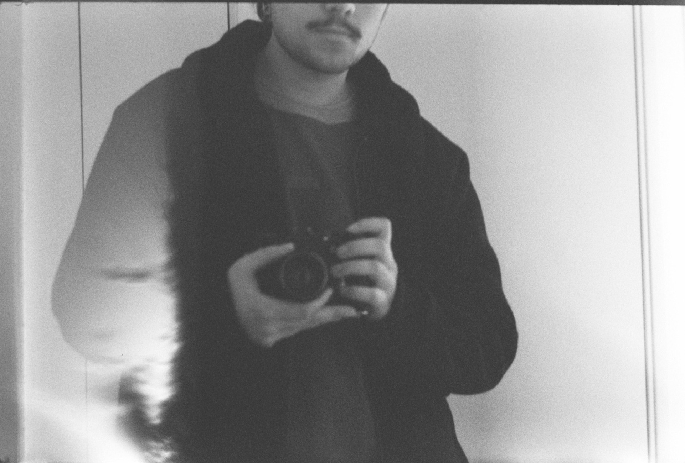
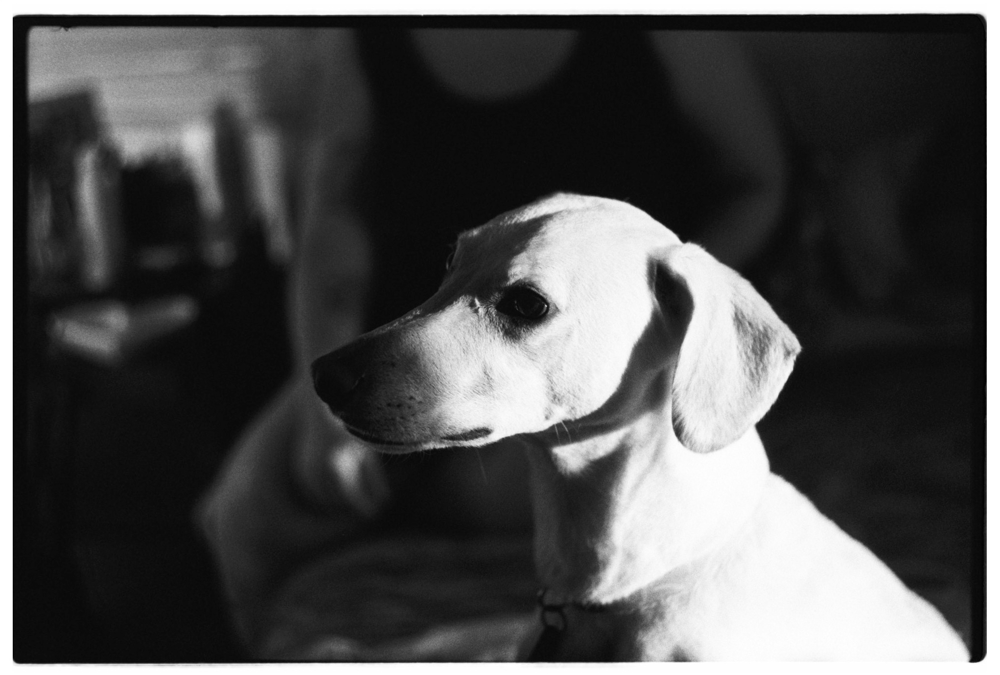

┆.𖥔 ݁ ˖ ๋࣭ ⭑˚₊⊹ ࣪ ˖ BIENVENIDO A MI ESPACIO EN LA WEB ˖ ࣪ ⊹₊˚⭑ ๋࣭ ˖ ݁ 𖥔.┆
YO

(Javier Fuenzalida Martinez(Serchi(Sir. Chi)))
KE ESTOY HACIENDO
- Trabajando en Canal 13
- Trabjando en proyecto Aguas Trasparentes (DUOC + DGA)
- Haciendo esta pagina
- Aprendiendo de temas variados
INFO SOBRE MI
Soy un ser humano que le encanta la creatividad y siente pasion por aprender y hacer diferentes tipos de cosas, mi profesion es Ingeniero Informatico, pero eso no es suficiente para definirme.
-
Algunos de mis gustos son:
- Programacion
- Musica (escuchar, mezclar y hacer)
- Arte
- Fotografia
- Esoterismo
- Cualquier cosa que involucre creatividad
- Ciencia de datos e IA
- Cine
- Computacion en general
Hice esta pagina web como una forma de alejarme de las redes sociales, que creo le han causado un gran daño a la sociedad moderna. El internet deberia ser un espacio libre, donde uno pueda decidir lo que quiere ver y como se quiere presentar ante los demas. Llevo algunos meses sin redes sociales y creo que ha sido una de las grandes deciciones de mi vida. Veremos si en algun minuto siento alguna presion social por volver (no creo).
Algunos elementos de esta pagina web los hice apoyado por Modelos de lenguaje largos (LLM, IA, IA generativa) (principalmente codigo, nada relacionado con arte) si tienes algun problema con eso, lo lamento por ti.
GALERIA


